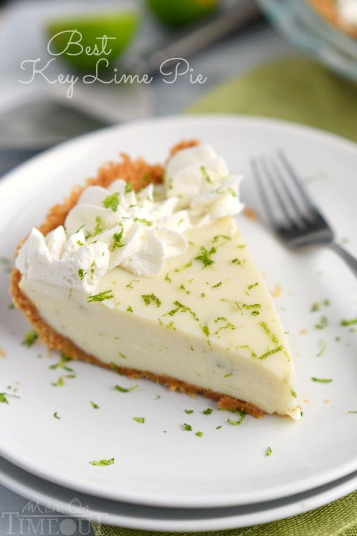
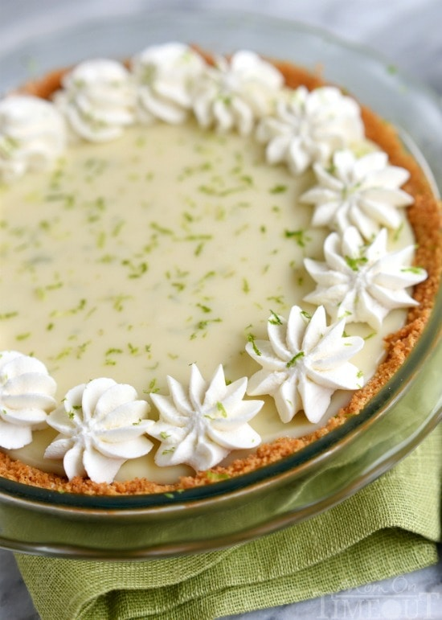

Best Key Lime Pie
The Best Key Lime Pie recipe EVER! Tart and sweet and incredibly easy, this Key Lime Pie is sure to be a family favorite! A delicious graham cracker crust filled to the brim with an incredibly creamy filling that is just so quick to make! You won’t be able to stop at just one slice!


Ingredients
1 1/2 cups graham cracker crumbs 28 oz sweetened condensed milk zest from 2 regular limes or 4 key limes 1 cup heavy whipping cream
Instructions
Graham Cracker Crust
Mix graham cracker crumbs, sugar, and butter in a small bowl. Press the crumb mixture into an 8" - 9.5" pie pan. Bake for 7 minutes. Cool for at least 30 minutes.
Key Lime Filling
Whisk together sweetened condensed milk, sour cream, lime juice, and lime zest in a medium bowl. Pour into prepared graham cracker crust and bake for 10 minutes. Let pie cool slightly before chilling. Chill for at least 3 hours.
Whipped Cream Topping
Beat heavy cream and sugar together in a mixer until stiff peaks form. Beat in vanilla. Spread or pipe the whipped cream on top of the cooled pie. Top with additional lime zest if desired.
Recipe by Trish at Mom On Timeout